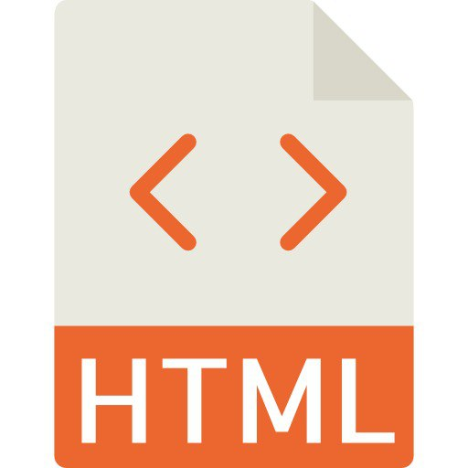

Самостійна робота №1
- HTML є стандартною мовою розмітки для створення веб-сторінок.
- HTML означає Hyper Text Markup Language (мова гіпертекстової розмітки)
- HTML описує структуру веб-сторінок за допомогою розмітки
- HTML-елементи є будівельними блоками сторінок HTML
- Елементи HTML представлені тегами
- Теги HTML позначають фрагменти змісту, такі як header (заголовок), paragraph (параграф), table (таблиця) та ін.
- Браузери не відображають HTML теги, але використовують їх для відображення змісту web-сторінки
- Редактор Notepad ++
- Редактор Brackets
- Редактор Sublime Text
- IDE Atom
- IDE Visual Studio Code
- IDE WebStorm / PHPStorm
- IDE Dreamweaver
- IDE Eclipse
- IDE NetBeans
- IDE Komodo
- IDE Emacs
- IDE Ultraedit
- IDE Xcode (для Apple)
-
HTML Документи:
Мій перший заголовок
Мій перший параграф.
-
HTML Заголовки:
Це заголовок 1
Це заголовок 2
Це заголовок 3
-
HTML Параграфи:
Це параграф.
Це інший параграф.
- HTML Посилання: Це посилання 
- HTML Кнопки:
-
HTML Списки:
Невпорядкований список HTML
- Кава
- Чай
- Молоко
-
Впорядкований список HTML
- Кава
- Чай
- Молоко
- Всі HTML елементи можуть мати атрибути
- Атрибути надають додаткову інформацію про елемент
- Атрибути завжди вказуються в початковому тезі
- Атрибути зазвичай входять в пари ім'я/значення, наприклад: ім'я="значення"
-
1.7.1 HTML Посилання - Різні кольори
За замовчуванням посилання відображатиметься таким (у всіх браузерах):- Невідвідане посилання підкреслено, синім кольором
- Відвідане посилання підкреслено, фіолетовим кольором
- Активне посилання підкреслено, червоним кольором
-
1.7.2 HTML Посилання - Створення закладок
Закладки можуть бути корисними, якщо вебсторінка дуже довга. Щоб створити закладку - спочатку створіть закладку, а потім додайте на неї посилання. Після натискання на посилання сторінка прокручується вниз або вгору до місця із закладкою.
Перейти до розділу 1Розділ 1
Це текст розділу 1.
-
1.8.1 HTML Карти зображень
HTML тег <map> визначає карту зображення. Карта зображень - це зображення із клікабельними областями. Області визначаються одним або кількома тегами <area>. Ідея карти зображення полягає в тому, що ви повинні мати можливість виконувати різні дії залежно від того, де на зображенні ви клацаєте. Для створення карти зображень вам потрібно зображення та деякий HTML-код, який описує області, на які можна натиснути.
-
1.8.2 HTML Фонові зображення
Щоб додати фонове зображення до елемента HTML, використовуйте HTML атрибут style та CSS властивість background-image. Якщо ви хочете, щоб фонове зображення охоплювало весь елемент, ви можете встановити для властивості background-size значення cover. Також, щоб увесь елемент був завжди покритий, встановіть для властивості background-attachment значення fixed. Таким чином, фонове зображення покриє весь елемент, не розтягуючись (зображення збереже початкові пропорції).
Текст з фоновим зображенням.
-
1.8.3 HTML елемент <picture>
HTML елемент <picture> надає веб-розробникам більшу гнучкість у визначенні графічних ресурсів. Елемент <picture> містить один або кілька елементів <source> кожен з яких посилається на різні зображення через атрибут srcset.
Таким чином браузер може вибрати зображення, яке найкраще відповідає поточному перегляду та/або пристрою. Кожен елемент <source> має атрибут media який визначає, коли зображення є найбільш підходящим. -
1.8.4 HTML Favicon / Фавікон
В якості фавіконки може бути використане будь-яке зображення. Також можна створити свій власний фавікон на таких сайтах, як favicon.cc Щоб додати фавіконку на свій вебсайт, або збережіть зображення значка в кореневому каталозі вашого вебсервера, або створіть папку в кореневому каталозі з іменем images і збережіть зображення фавіконки в цій папці. Розповсюджена назва зображення фавікона: "favicon.ico", потім додайте елемент <link> в файл "index.html" після елемента <title> </title>
Приклад: <link rel="icon" type="image/x-icon" href="/images/favicon.ico"> -
1.9.1 HTML Межі таблиці
Щоб додати межу, використовуйте CSS властивість border до таблиці table, і елементів th та td.
Щоб позбавитись подвійних меж, як в наведеному вище прикладі, задайте для CSS властивості border-collapse значення collapse.Ім'я Прізвище Олена Іваненко -
1.9.2 HTML Розмір таблиці
Щоб встановити розмір визначеного стовпця, додайте атрибут style до елементів <th> або <td>.
Щоб встановити висоту визначеного рядка, додайте атрибут style до елемента рядка таблиці.
Ім'я Прізвище Вік Jill Smith 50 Eve Jackson 94 -
1.9.3 HTML Заголовки таблиць
Заголовки таблиць визначаються елементами th, кожен елемент th представляє чарунку таблиці. Щоб вирівняти заголовки таблиці по лівому краю, використовуйте CSS властивість text-align.
Ім'я Вік Jill Smith 50 Eve Jackson 94 -
1.9.4 HTML Таблиці. Padding & Spacing
Cell Padding (відступи чарунок) – це простір між краями чарунок і змістом чарунки. За замовчуванням для заповнення встановлено значення 0. Щоб додати відступи до чарунок таблиці, використовуйте CSS властивість padding. Щоб додати відступ лише над змістом (тобто, вгорі), використовуйте властивість padding-top. Також інші сторони за допомогою властивостей padding-bottom (внизу), padding-left (ліворуч) і padding-right (праворуч)
Софія Марія -
1.9.5 HTML Таблиці. Colspan & Rowspan
Щоб створити чарунку, що охоплює кілька стовпців, використовуйте атрибут colspan. Щоб чарунка охопила кілька рядків, використовуйте атрибут rowspan.
Об'єднана ячейка Ячейка 1 Ячейка 2 -
1.9.6 HTML Стилізація таблиць
Ім'я Прізвище Jill Smith -
1.9.7 HTML Група стовпців таблиці
Якщо ви хочете оформити два перших стовпця таблиці, використовуйте елементи <colgroup> та <col>. Елемент <colgroup> слід використовувати в якості контейнера для специфікацій стовпця. Кожна група вказується за допомогою елемента <col>. Атрибут span вказує, скільки стовпців отримує стиль. Атрибут style вказує стиль, що застосовується до стовпців.
Ім'я Прізвище Jill Smith - Елемент списку 1
- Елемент списку 2
- Елемент списку 1
- Елемент списку 2
-
1.10.1 HTML Невпорядковані списки
- Елемент 1
- Елемент 2
- Елемент 3
-
1.10.2 HTML Впорядковані списки
- Перший елемент
- Другий елемент
- Третій елемент
-
1.10.3 HTML Інші списки
Список описів - це список термінів з описом кожного терміна. Тег <dl> визначає список описів, тег <dt> визначає термін (ім’я), а тег <dd> описує кожен термін.
- Термін 1
- Визначення для терміна 1
- Термін 2
- Визначення для терміна 2
-
1.10.4 HTML Вкладені списки
- Перший елемент
- Другий елемент
- Перший вкладений елемент
- Другий вкладений елемент
- Третій елемент
1.1 Що таке HTML?
1.2 HTML Редактори коду та IDE
1.3 HTML Основні приклади
1.4 HTML Елементи
HTML елемент зазвичай складається із тегу початкового і тегу кінцевого, а зміст вставляється поміж ними:
<tagname>Зміст розміщується тут...</tagname>
HTML елемент - це все від початкового тегу до кінцевого тегу.
Вкладені HTML елементи HTML елементи можуть бути вкладеними (елементи можуть містити елементи).
Всі документи HTML складаються з вкладених елементів HTML.
Це заголовок
Це параграф.
HTML елементи без вмісту називаються порожніми елементами. Елемент <br> - це порожній елемент без закриваючого тегу (тег
визначає обрив рядка)
Це параграф
з обривом рядка.
1.5 HTML Атрибути

Це параграф червоного кольору.
Це параграф.
Стандарт HTML5 не вимагає імен атрибутів в нижньому регістрі.
Атрибут title може бути написаний у верхньому або нижньому регістрі, наприклад title або TITLE.
W3C рекомендує використовувати нижній регістр в HTML і вимагає нижній регістр для більш строгих типів документів, таких як XHTML.
1.6 HTML Параграфи
Це перший параграф.
Це другий параграф.
Цей
параграф
має розриви рядка.
і він зберігає пробіли та розриви рядків:
І ось ідем у бою життєвому.
Міцні, тверді, незламні мов граніт,
Бо плач не дав свободи ще нікому,
А хто борець, той здобуває світ.
1.7 HTML Посилання
HTML посилання - це гіперпосилання. Ви можете натиснути на посилання і перейти до іншого документу. При наведенні миші на посилання стрілка миші перетвориться в маленьку стрілку. Примітка: Посилання не обов'язково повинно бути текстовим. Посиланням може бути зображення або будь-який інший HTML елемент.
HTML уроки для початківців онлайн HTML ЗображенняЦе текст посилання
1.8 HTML Зображення
HTML Синтаксис зображень
В HTML зображення визначаються за допомогою тега <img>.
Тег <img> пустий, містить лише атрибути і не має закриваючого тега.
Атрибут src вказує URL (вебадресу) зображення.
Атрибут alt надає альтернативний текст для зображення, якщо користувач з якоїсь причини не може його переглянути: через повільне
підключення до Інтернету, помилки в атрибуті src або якщо користувач використовує програму читання з екрана (скрінрідер).
Значення атрибута alt має описувати зображення, тобто те, що на ньому зображено
1.9 HTML Таблиці
Тег <table> визначає HTML таблицю. Кожен рядок таблиці визначається тегом <tr>. Кожен заголовок таблиці визначається тегом <th>. Кожна чарунка з даними таблиці визначається тегом <td>. За замовчуванням текст в елементах <th> виділений жирним шрифтом і відцентрований. За замовчуванням текст в елементах <td> є звичайним і вирівняним за лівим краєм.
| Ім'я | Прізвище | Вік |
|---|---|---|
| Марія | Іванко | 24 |
| Євген | Котов | 29 |
1.10 HTML Списки
Невпорядкований (ненумерований) список починається з тега <ul> Кожний елемент списку починається з тега <li>.Елементи списку будуть помічені маркерами (маленькі чорні кола) за замовчуванням.
2.1 HTML Форми
Форма HTML використовується для збору даних, введених користувачем. Введені користувачем дані найчастіше надсилаються на сервер для обробки. HTML елемент <form> визначає форму, яка використовується для збору користувацького вводу. HTML-форма містить елементи форми. Елементи форми - це різні типи елементів вводу, такі як текстові поля, прапорці, перемикачі, кнопки надсилання тощо. Елемент <input> є найбільш важливим елементом форми. Елемент <input> може відображатися кількома способами, в залежності від атрибута type.
-
2.1.1 HTML Атрибути форми
Атрибут action визначає дію, яка має бути виконана при надсиланні форми. Зазвичай дані форми надсилаються в файл на сервері, коли користувач натискає кнопку надсилання. В наведеному нижче прикладі дані форми надсилаються в файл з іменем "action_page.html". Цей файл містить серверний скрипт (зазвичай на мові PHP), який обробляє дані форми.
Атрибут method визначає метод HTTP, який буде використовуватися при надсиланні даних форми. Дані форми можуть бути відправлені як змінні URL (з method="get") або як HTTP post транзакція (з method="post"). Метод HTTP за замовчуванням при надсиланні даних форми - GET.
-
2.1.2 HTML Елементи форми
HTML елемент <form> може містити один або кілька таких елементів форми:- <input>
- <label>
- <select>
- <textarea>
- <button>
- <fieldset>
- <legend>
- <datalist>
- <output>
- <option>
- <optgroup>
Елемент <textarea> визначає багаторядкове поле вводу (текстової області). Атрибут rows визначає видиму кількість рядків в текстовій області. Атрибут cols визначає видиму ширину текстової області. Ось як HTML-код вище буде відображатися в браузері:
Елемент <datalist> визначає список попередньо визначених параметрів для елемента <input>. Користувачі побачать випадаючий список попередньо визначених параметрів при введенні даних. Ось як HTML-код вище буде відображатися в браузері:
Елемент <datalist> визначає список попередньо визначених параметрів для елемента <input>. Користувачі побачать випадаючий список попередньо визначених параметрів при введенні даних. Атрибут list елемента <input>повинен посилатися на атрибут id елемента <datalist>.
Елемент <output> представляє результат обрахування (наприклад, виконаний скриптом).-
HTML Елементи форми:
- <form> Визначає HTML форму для користувальницького вводу
- <input> Визначає елемент управління вводом
- <textarea> Визначає багаторядковий елемент управління введенням (текстова область)
- <label> Визначає мітку для елемента <input>
- <fieldset> Групує пов’язані елементи в формі
- <legend> Визначає заголовок для елемента <fieldset>
- <select> Визначає випадаючий (розкриваючий) список
- <optgroup> Визначає группу пов’язаних параметрів в випадаючому списку
- <option> Визначає параметр в випадаючому списку
- <button> Визначає клікабельну кнопку
- <datalist> Визначає список попередньо визначених параметрів для елементів управління вводом
- <output> Визначає результат розрахунку
-
2.1.3 HTML Типи вводу
Тут різні типи введення, які ви можете використовувати в HTML:- <input type="button">
- <input type="checkbox">
- <input type="color">
- <input type="date">
- <input type="datetime-local">
- <input type="email">
- <input type="file">
- <input type="hidden">
- <input type="image">
- <input type="month">
- <input type="number">
- <input type="password">
- <input type="radio">
- <input type="range">
- <input type="reset">
- <input type="search">
- <input type="submit">
- <input type="tel">
- <input type="text">
- <input type="time">
- <input type="url">
- <input type="week">
-
2.1.4 HTML Атрибути вводу
-
2.1.5 HTML Атрибути вводу